Artigo à Prova de Futuro
Jornada de Open Science na Prática
Dr. Pablo Rogers
Objetivos da Aula
- 🔄 Compreender controle de versão para Ciência Aberta
- 🔧 Distinguir Git (local) de GitHub (remoto/colaborativo)
- ⚠️ Reconhecer limitações de ferramentas simples de versionamento
- 🌿 Identificar workflows apropriados para pesquisa
- 💻 Configurar e usar Git/GitHub integrado ao RStudio
- 📊 Realizar operações básicas: commit, push, pull, branch
O Problema do Versionamento Amador

Preliminares: Alternativas ao Git
Existem outras soluções de controle de versão:
- CVS, Subversion (SVN), Monotone, BitKeeper, Perforce
Por que Git?
- Global Information Tracker (GIT) - mesmo criador do Linux (Linus Torvalds, 2005)
- Modelo de branching superior e eficiente
- Distribuído: funciona localmente sem necessidade de servidor
- Comunidade massiva e ferramentas integradas (GitHub, GitLab)
GitHub específico:
- Desenvolvido em 2008, atualmente pertence à Microsoft
- Plataforma de hospedagem + colaboração baseada em Git
Git vs GitHub: Conceitos Fundamentais
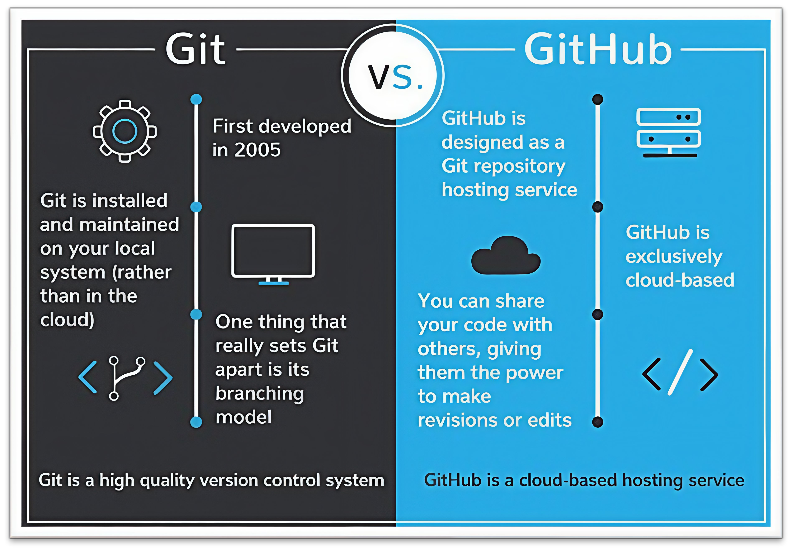
Controle de Versão Local (Git)
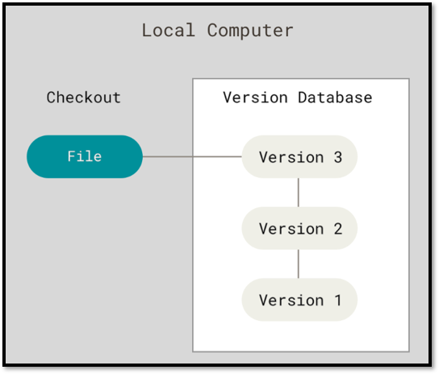
Anatomia do Workflow Git Local
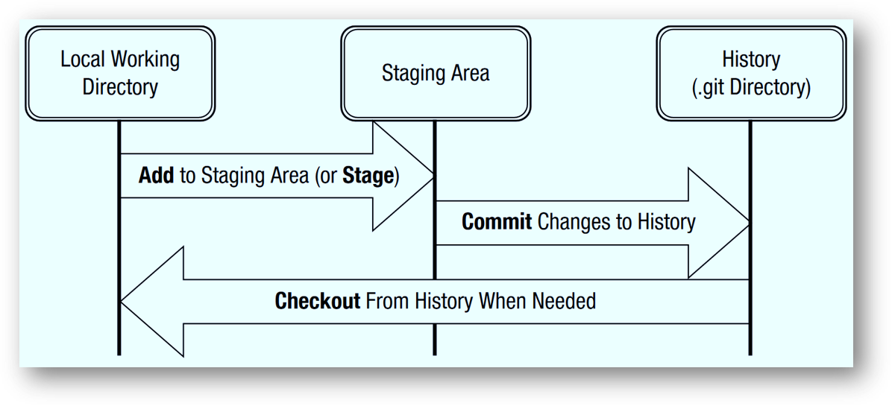
Controle de Versão Distribuído
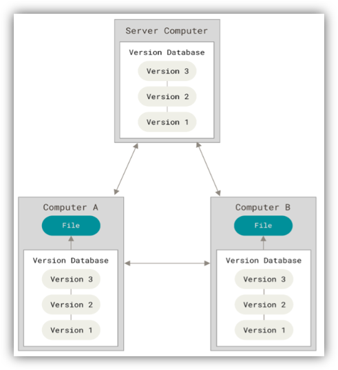
Git + GitHub: Sincronização
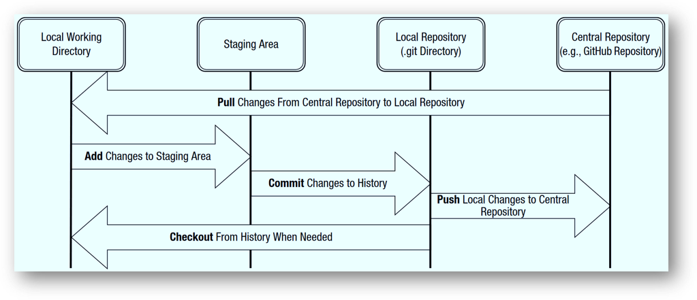
Comandos Git Essenciais e RStudio GUI
Comandos que o RStudio GUI substitui:
git add→ Checkbox “Staged” no Git panegit commit→ Botão “Commit” + mensagemgit push→ Botão verde “Push” (⬆️)git pull→ Botão azul “Pull” (⬇️)git status→ Coluna “Status” (M, A, D, ?)git diff→ Botão “Diff”git log→ Botão “History” (🕐)
Workflow Colaborativo Completo
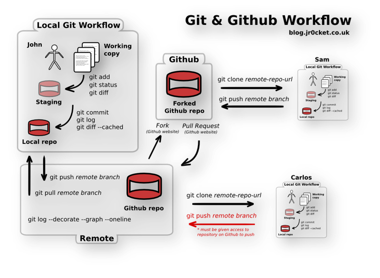
Pensando em Linha do Tempo: Branches
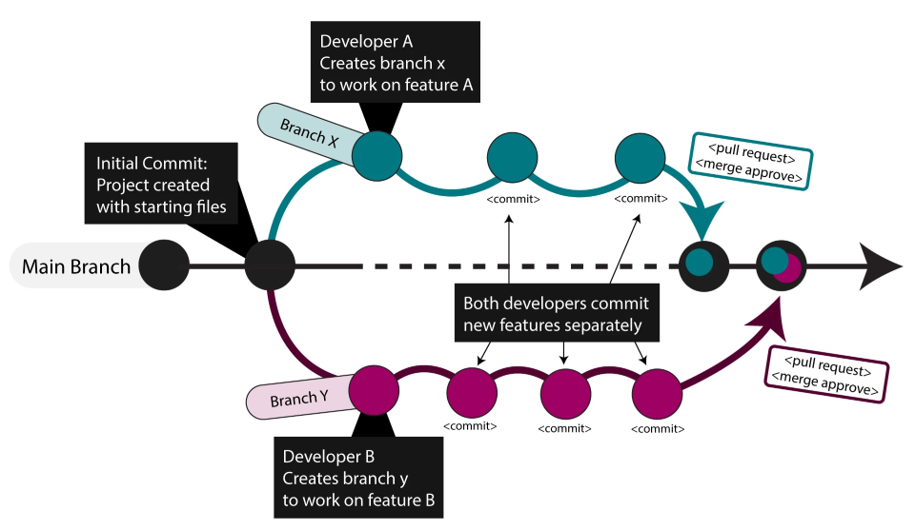
Estratégias de Branching: Visão Geral
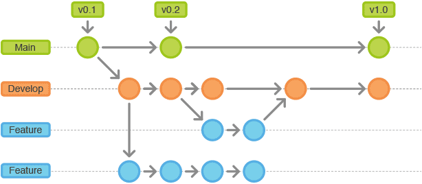
GitFlow: Estratégia Avançada
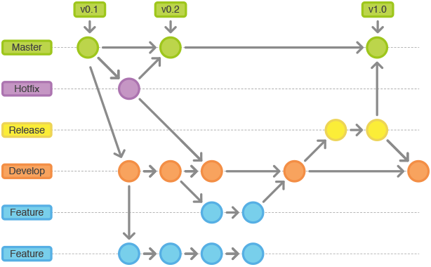
Branches especializados:
- Main: versão de produção estável
- Develop: desenvolvimento contínuo
- Feature: funcionalidades específicas
- Release: preparação para lançamento (v0.1, v0.2, v1.0)
- Hotfix: correções urgentes em produção
Workflow Colaborativo: 3 Autores
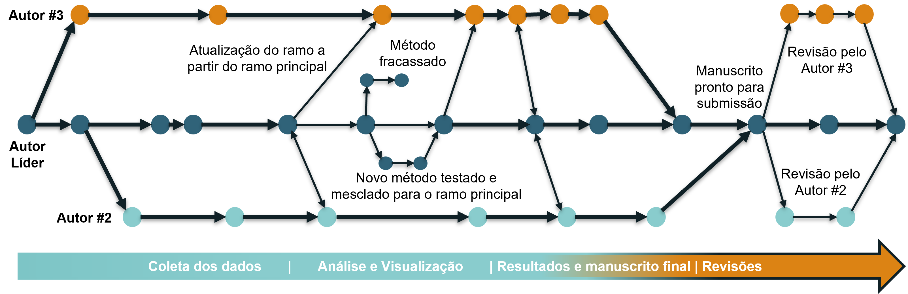
Workflow Solo: Sincronização Inicial
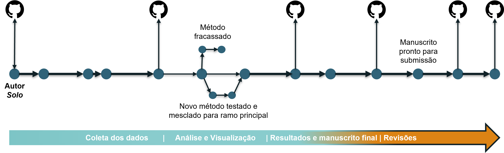
Workflow Solo: Sincronização Final
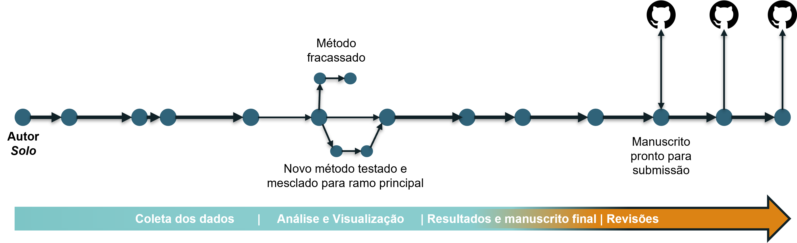
Por Que Ferramentas Simples Não Bastam?
Limitações de processadores de texto e nuvem:
- ❌ Histórico de versões limitado e pouco detalhado
- ❌ Dificulta colaboração com múltiplos autores
- ❌ Não otimizado para código e dados científicos
- ❌ Impossibilita automação de testes e validações
- ❌ Sem mecanismos de resolução de conflitos eficientes
- ❌ Documentação informal e não estruturada
Vantagens do Git/GitHub:
- ✅ Rastreamento minucioso (autor + propósito de cada mudança)
- ✅ Branches e merge estruturados para colaboração
- ✅ Automação via GitHub Actions (CI/CD)
- ✅ Commit messages e issues para documentação
Na Prática: RStudio + Git + GitHub
Workflow que aprenderemos hoje:
- ⚙️ Configurar Git e SSH keys (uma vez)
- 🌐 Criar repositório no GitHub
- 📥 Clonar repositório no RStudio
- 📝 Editar arquivos localmente
- ✅ Stage → Commit com mensagem clara
- ⬇️ Pull (sempre antes de push!)
- ⬆️ Push para GitHub
- 🔄 Repetir ciclo 4-7 continuamente
Preparação para Próximo Módulo
Conexão com GitHub Pages:
- 📄 Repositório público é obrigatório para GitHub Pages gratuito
- 🌿 Publishing source: branch
main(ou outra configurada) - 🌐 URL resultante:
https://usuario.github.io/nome-repo - 🚀 Workflow: render Quarto → commit HTML → push → site online em minutos
Conceitos introduzidos hoje:
- Navegação interface GitHub (Code, Settings, History)
- Público vs Privado (implicações)
- Publishing source (preparação conceitual)
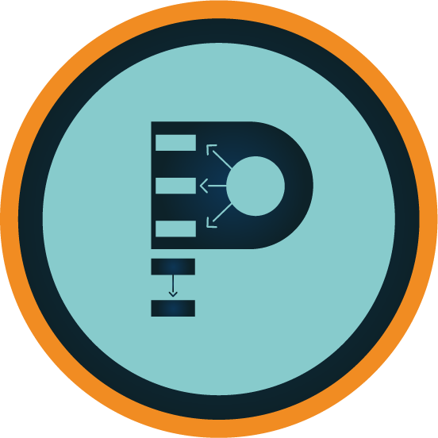
Controle de Versão | Git/GitHub